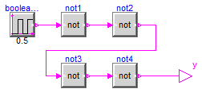
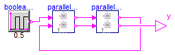

Series connection of "not" blocks that are structured so that an artificial loops is present with FMUs
Extends from Modelica.Icons.ExamplesPackage (Icon for packages containing runnable examples).
| Name | Description |
|---|---|
| Reference | Reference solution in pure Modelica |
| WithFMUsReference | Reference solution in pure Modelica using exactly the same structuring as in Model WithFMUs |
| WithFMUs | Solution with FMUs |
| For all models in this package an FMU must be generated |
Reference solution in pure Modelica

Extends from Modelica.Icons.Example (Icon for runnable examples).
| Type | Name | Default | Description |
|---|---|---|---|
| Boolean | Qini | false | Start value of Q at initial time |
| Type | Name | Description |
|---|---|---|
| output BooleanOutput | y | Connector of Boolean output signal |
Reference solution in pure Modelica using exactly the same structuring as in Model WithFMUs

Extends from Modelica.Icons.Example (Icon for runnable examples).
| Type | Name | Description |
|---|---|---|
| output BooleanOutput | y | Connector of Boolean output signal |
Solution with FMUs
Extends from Modelica.Icons.Example (Icon for runnable examples).
| Type | Name | Description |
|---|---|---|
| output BooleanOutput | y | Connector of Boolean output signal |